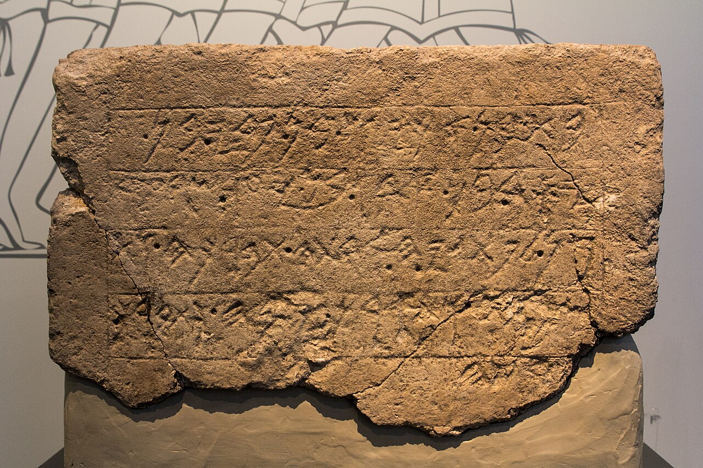

Ekron Temple Inscription

- Find Name
- Ekron Temple Inscription
- Historical Period
- Iron Age II
- Artifact Date
- c. 7th century BC
- Date Discovered
- 1996
- Discovery Location
- Tel Miqne-Ekron, Israel
- Current Location
- Israel Museum, Jerusalem
- Timeline Era
- Divided Monarchy
- Description
- A large limestone dedicatory inscription from the temple at Ekron, one of Philistia's five great cities, naming a line of Ekron's kings including Ikausu (Achish) son of Padi. It was found in place in the temple's sanctuary during the final excavation season.
- Biblical Significance
- The inscription names Achish and Padi, both known from Assyrian records, and confirms Ekron's royal line in the exact period when Philistines, Assyrians, and Judah collided in Scripture. It grounds the Philistine world of Samuel and the prophets in inscriptions those cities left for themselves.
- Evidence Class
- Direct
- Interpretations
- Scholars agree the inscription names Achish (Ikausu), king of Ekron, and dedicates a temple; this is a later Achish than the one David knew, showing the name’s long Philistine history.
- Scripture Illuminated
- Related People
- Related Books
- Related Events
Awaiting Review Not yet checked against scholarly sources. Treat its claims as provisional until this entry is reviewed. About verification
Last reviewed: not yet reviewed